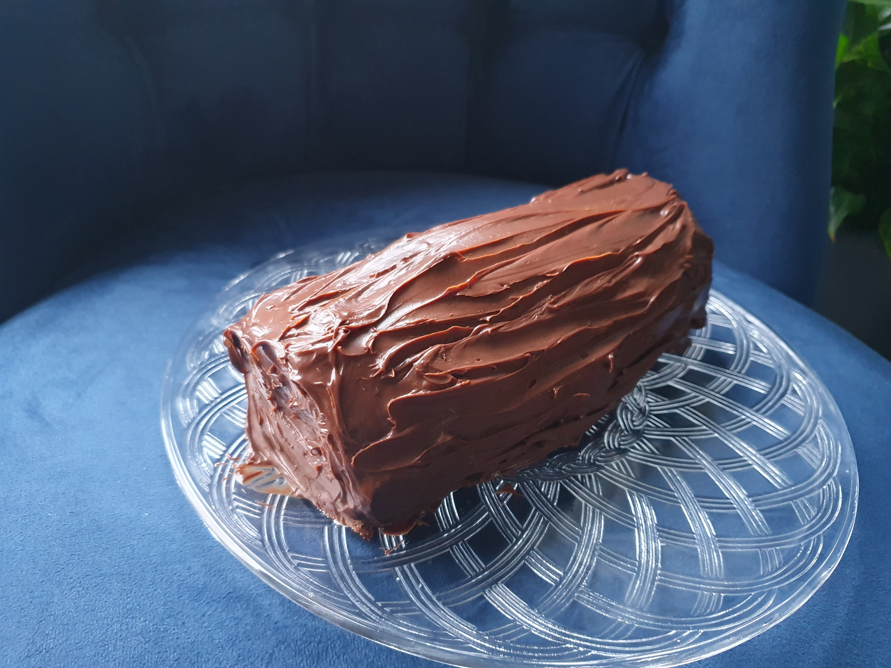
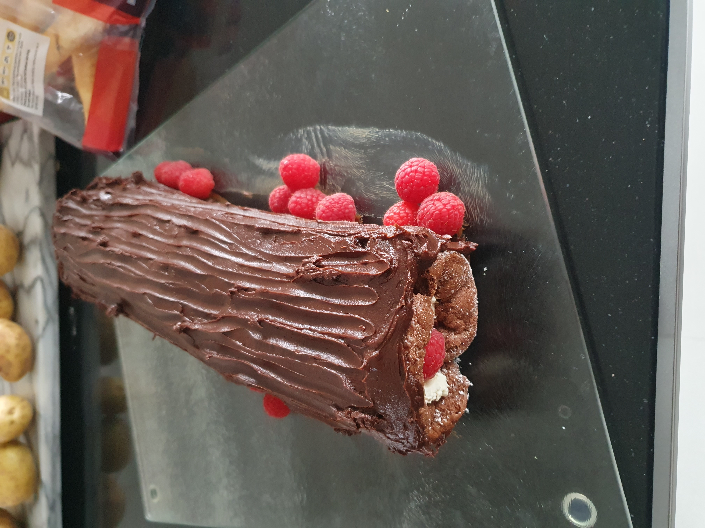

Pastry:
250g P flour
40g icing sugar
1/4tsp salt
150g butter
Filling:
80g melted butter
130g sugar
60g P flour
10g cornflour
90ml aquafaba
200g ground almonds
1tsp BP
1/2tsp almond extract
6tbsp raspberry jam
Topping:
150g raspberries
flaked almonds5 Desserts
5.1 Bakewell Tart
180C
23-25cm tart
Method
- Shape pastry into disc and chill half an hour.
- Roll and line tart.
- Prick and freeze 20mins.
- Bake with beans 20 mins, then without 10mins until pale golden then set aside.
- Whisk melted butter and sugar, then whisk in flours.
- Gradually whik in aquafaba, then rest of frangipane.
- Assemble and bake 30-45mins.https://domesticgothess.com/blog/2020/05/28/vegan-bakewell-tart/
5.2 Chocolate Caramels
100g dark brown sugar
2tbsp water
2tbsp tahini or nut butter
2tbsp coconut oil or vegan butter
1/4 tsp fine sea salt
1/2 tsp vanilla
300g dark chocolate35
Method
- Heat sugar and water until dissolved and starting to bubble - swirl if necessary - 2-3 mins max.
- Remove from heat add oil, tahini, salt and vanilla and stir.
- Heat very low for 30 seconds if won't come together., Cool - will be very runny at first, but will thicken as cool.
- Once cool, line moulds with 3mm chocolate and leave couple of mins.
- Then fill with cool caramel and top with 2-3mm chocolate.
- After 30 mins in freezer, can demould.Notes
- Thought the tahini was quite strong, but were liked by others. Maybe peanut butter would be nice?https://avirtualvegan.com/vegan-chocolate-salted-caramels/#recipe
5.3 Chocolate Fudge
350g dark chocolate
370g vegan condensed milk
chopped nute to decorate20cm square
Method
- Melt over low heat, stirring occasionally until smooth and silky.
- Press into time and chill for 1 hour or until set.Notes
- Was ok, would be ok use of leftover condensed milk.
- One third of recipe in large glass clip tub was under 2cm thick.https://www.carnation.co.uk/recipes/vegan-easy-chocolate-fudge
5.4 Chocolate Tart
Base:
350g digestives
2tbsp cocoa
1tbsp P flour
1tbsp syrup
125g-175g butter
Filling:
2 x 400g cans coconut milk, chilled
200g dark chocolate
1tbsp syrup180C
45577 mins
23cm tart
Method
- Crush biscuits, mix in rest and enough butter to create dough.
- Press into tin, bake and cool.
- Whisk melted chocolate, syrup and only thick coconut (discard water).
- Pour over base and set in fridge for 3-4 hours.Notes
- Kept in fridge for few days.
- Nice with raspberries.5.5 Crumble Topping
4oz P flour
4oz marg
2oz oats
3oz sugar
2oz coconut180C
35-40 mins
large red dish
Notes
- Good for using up frozen fruits.
- For large red dish want about 600g fruits.5.6 Easy Chocolate Pudding
50g P flour
1/2tsp BP
1tbs cocoa
50g caster sugar
50g melted butter
1 egg
vanilla
1- tbs milk
25g nuts
Topping:
50g brown sugar
1tbs cocoa
60ml hot water180C
30 mins
1/2 litre dish
Method
- Pour topping on top before baking (becomes a sauce underneath sponge).Notes
- Serves 3.5.7 Steamed Syrup Cake
1tbsp breadcrumbs
3tbsp syrup
6oz mix90 mins
1 litre bowl
Method
- Put breadcrumbs and syrup at bottom of dish.Notes
- Optional:
- lemon zest.5.8 Sticky Toffee Pudding
120ml water
200g dates
110g butter
110g light brown sugar
200g SR flour
1tsp B of S
1tbsp ginger
2tsp mixed spice
1tsp cinnamon
240ml milk
1tbsp apple cider vinegar
Sauce:
3tbsp syrup
200g light brown sugar
150g butter
1tsp vanilla170C
50 mins
1 litre dish
Method
- Simmer dates in water for 5mins.
- Cream butter and sugar.
- Add vinegar very very last.
- Melt sauce ingredients and simmer 5m.
- Prick, pour over 1/2 sauce. Rest to serve.5.9 Yule Log
4 eggs;100g caster sugar
65g SR flour
40g cocoa.
Filling:
200g/ml ganache
cream
berries200C
8-10 mins
13x9”
https://www.bbc.co.uk/food/recipes/yule_log_15656

